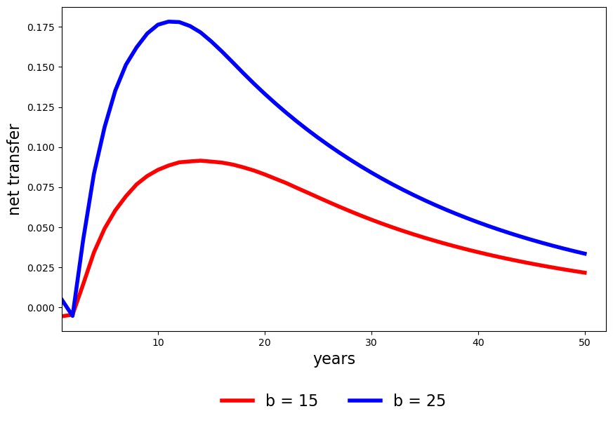
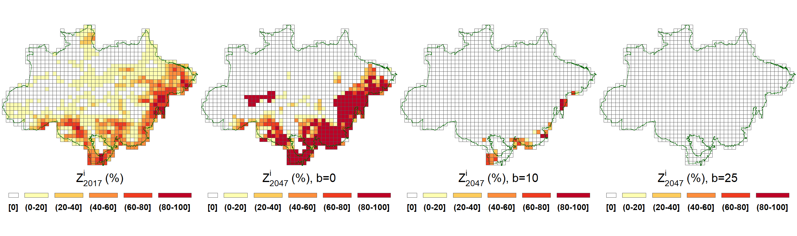

Results for case without stochasticity or ambiguity aversion#
In this section, we discuss results for a model with a constant price for cattle that equals the average price in the stationary distribution for the estimated 2-state Markov chain ($41.10). We first discuss results for 1043 sites, and then include results for 78 sites for comparison.
As Figure 5 shows, with “business-as-usual” ( \(P^e=P^{ee} = \$7.6\)), the optimal choice involves an increase in the agricultural area from 15% to around 25% of the biome. This increase may actually cause sufficient deforestation for the hydrological cycle of the Amazon to degrade to the point of being unable to support rain forest ecosystems (Lovejoy and Nobre [2018]). The predicted trajectories are much different with an additional per ton payment to the planner of $10, $15, $20 or $25. Figure 6 reports the trajectories over time of the transfer payments for \(b = \$15\) and \(b = \$25\). The peak payments occur after about 12 years for both values of \(b\). As expected the transfer payments for \(b=\$25\) are much larger that the corresponding payments for \(b=\$10.\)
{kind=link}
{kind=link}

{kind=link}
Fig 6: Evolution of transfer payments for two choices of \(b\)
As we now show, these transfer payments result in a substantial decrease in agricultural area and a corresponding increase in forested area. The first five rows of Table Present-value decomposition - 1043 sites give the discounted value to the planner of a commitment to receive \(b\) of net transfers for each ton captured of \(CO_2,\) when \(P^a\) is the stationary price. It also gives a decomposition of this present value to interpretable components. Among these components, “forest services” are measured at the implied Brazilian shadow price for business-as-usual. The net transfers to Brazil are reported separately. Even transfers of $10 per ton are enough to compensate the losses of agricultural output, but the largest contributor to the gains is the increase in forest services. The larger transfer of $25 per ton of net captured \(CO_2\) almost doubles the value for the planner - a net gain of $226 billion. This net gain is composed of a loss of $354 billion in the value of cattle output,[2] which is more than compensated by $352 billion in transfers and $246 billion in forest services. Adjustment costs are a small part of the story.
\(P^e\) |
\(b\) |
agricultural output value |
net transfers |
forest services |
adjustment Costs |
planner value |
|---|---|---|---|---|---|---|
($) |
($) |
($ \( 10^{11}\)) |
($ \( 10^{11}\)) |
($ \( 10^{11}\)) |
($ \( 10^{11}\)) |
($ \( 10^{11}\)) |
7.6 |
0 |
3.73 |
0.00 |
-1.39 |
0.08 |
2.26 |
17.6 |
10 |
0.58 |
1.17 |
0.89 |
0.12 |
2.52 |
22.6 |
15 |
0.33 |
1.98 |
1.00 |
0.18 |
3.14 |
27.6 |
20 |
0.24 |
2.76 |
1.05 |
0.23 |
3.82 |
32.6 |
25 |
0.19 |
3.53 |
1.07 |
0.27 |
4.52 |
Table Transfer costs - 1043 sites displays the total effect of transfers per ton of net \(CO_2\) captured in years 15 and 30. For the business-as-usual carbon price, the planner chooses deforestation that induces carbon emissions of about 12 and 18 billion tons per year in 15 and 30 years, respectively. This table uses this baseline in featuring the “effective cost.” We calculated this as the ratio of discounted net transfers to the difference between the net carbon captured and the corresponding baseline value when \(b = 0.\) With transfers of, say, $15/ton, optimal management induces capture of about 6.6 billion tons by year 15 and an additional 7.2 billion tons by year 30. The effective costs are about $4.5 and $4.9, considerably less than the per ton subsidies captured by the \(b\)’s. With transfers of $25/ton, there are modest increases in the captured carbon with effective prices that are almost double, but still about one third the transfer payments per ton. Thus, the results in Table Transfer costs - 1043 sites illustrate the gains from trade in instituting a contract that pays Brazil per net ton of CO\(_2\) captured.
15 years |
30 years |
||||||
|---|---|---|---|---|---|---|---|
\(p^e\) |
b |
net captured emissions |
discounted net transfers |
discounted effective cost |
net captured emissions |
discounted net transfers |
discounted effective cost |
($) |
($) |
(billion tons of CO2e) |
($ \( 10^{11}\)) |
($ per ton of CO2e) |
(billion tons of CO2e) |
($ \( 10^{11}\)) |
($ per ton of CO2e) |
7.6 |
0 |
-12.04 |
0.00 |
NaN |
-17.66 |
0.00 |
NaN |
17.6 |
10 |
5.20 |
0.44 |
2.53 |
11.67 |
0.86 |
2.93 |
22.6 |
15 |
6.66 |
0.84 |
4.50 |
13.85 |
1.55 |
4.92 |
27.6 |
20 |
7.58 |
1.28 |
6.53 |
14.62 |
2.21 |
6.85 |
32.6 |
25 |
8.16 |
1.73 |
8.56 |
15.00 |
2.86 |
8.75 |
Figure 7 exhibits the initial distribution of land allocation over 30 years for \(b\) = $0, $10, and $25. It shows that for the case of transfers that exceed $10 per ton of net emissions, the area of the biome that is occupied by cattle farming after 30 years would be substantially reduced in comparison to the 2017 allocation. This is in sharp contrast to what transpires in the \(b=0\) business-as-usual specification in which agricultural production becomes quite intense in the lower right sites.
{kind=link}
Fig 7: Agricultural area changes after 30 years.
Figure 8 provides a more complete spatial dynamic characterization for transfers of $15/ton. In the optimal solution, much of the change in land occupation occurs within the first 15 years. Appendix A shows how much this process slows down for higher choices of the adjustment cost.
\(P^e\) |
b |
agricultural output value |
net transfers |
forest services |
adjustment Costs |
planner value |
|---|---|---|---|---|---|---|
($) |
($) |
($ \( 10^{11}\)) |
($ \( 10^{11}\)) |
($ \( 10^{11}\)) |
($ \( 10^{11}\)) |
($ \( 10^{11}\)) |
7.1 |
0 |
3.31 |
0.00 |
-1.10 |
0.06 |
2.14 |
17.1 |
10 |
0.43 |
1.23 |
0.87 |
0.12 |
2.42 |
22.1 |
15 |
0.26 |
2.02 |
0.95 |
0.17 |
3.06 |
27.1 |
20 |
0.21 |
2.79 |
0.99 |
0.23 |
3.75 |
32.1 |
25 |
0.17 |
3.54 |
1.00 |
0.26 |
4.45 |
{kind=link}
Fig 8: Agricultural area evolution over time.
Our computations with parameter uncertainty and agricultural price stochasticity use a coarser grid with 78 sites. Before exploring those results, Table Present-value decomposition - 78 sites shows what happens to the present-value decomposition if we only reduce the resolution. Overall, the findings are quite similar for the two resolutions. Since some of the highly productive refined sites for either agriculture or carbon absorption have been aggregated with other less productive sites, the planner’s options are more limited. As a consequence, there are small reductions in agricultural output values and in the magnitudes of the forest services. This can be seen by comparing the respective columns of Table Present-value decomposition - 78 sites with those in Table Present-value decomposition - 1043 sites.